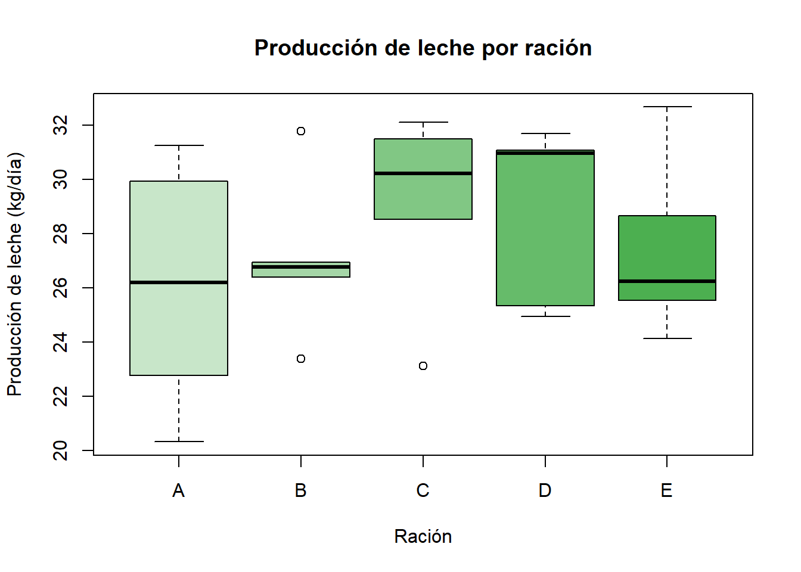

Ver código
library(car)
library(nortest)
source("funciones.R")Controlar dos gradientes a la vez
Un hato lechero quiere comparar cinco raciones para vacas en lactancia. Hay dos fuentes de variación conocidas:
Un DBCA controlaría solo una de las dos. El cuadro latino controla las dos. Cada vaca recibe cada ración una sola vez. En cada periodo se prueba cada ración una sola vez.
| Elemento | En este experimento |
|---|---|
| Objetivo | Comparar la producción de leche entre cinco raciones. |
| Población | Vacas Holstein del hato en la misma etapa de lactancia. |
| Factor | Ración (cinco niveles). |
| Tratamientos | Raciones A, B, C, D y E. |
| Bloqueo en filas | Vaca (5 vacas). |
| Bloqueo en columnas | Periodo (5 periodos de dos semanas). |
| Unidad experimental | La combinación vaca × periodo. |
| Variable respuesta | Producción de leche (kg/día). |
| Réplicas | 5 por ración. Cada ración aparece una vez por fila y por columna. |
El número de filas, de columnas y de tratamientos debe ser igual (\(t = 5\)). El diseño tiene \(t^2 = 25\) unidades experimentales.
\[ y_{ijk} = \mu + \alpha_i + \beta_j + \tau_k + \varepsilon_{ijk} \]
con \(i,j,k = 1,\dots,5\) y \(\varepsilon_{ijk} \overset{iid}{\sim} N(0, \sigma^2)\).
Solo 25 de las 125 combinaciones \((i,j,k)\) existen. El cuadro fija qué ración \(k\) corresponde a cada par \((i,j)\).
| Término | Significado | Por qué es una fuente de variación |
|---|---|---|
| \(y_{ijk}\) | Leche de la vaca \(i\) en el periodo \(j\) con la ración \(k\) | Es lo que se mide. |
| \(\mu\) | Media general | Es el punto de referencia común. |
| \(\alpha_i\) | Efecto de la vaca \(i\) | Primer gradiente. Cada vaca tiene un nivel propio de producción. Se separa del error. |
| \(\beta_j\) | Efecto del periodo \(j\) | Segundo gradiente. La curva de lactancia baja con el tiempo. Se separa del error. |
| \(\tau_k\) | Efecto de la ración \(k\) | Fuente de interés. El investigador eligió las raciones. El efecto es fijo. |
| \(\varepsilon_{ijk}\) | Error experimental | Fuente no controlada. Es lo que queda después de quitar vaca, periodo y ración. |
Los tres factores son aditivos. El modelo no estima interacciones. No hay réplicas suficientes para hacerlo.
Los grados de libertad son:
| Fuente | GL | Valor aquí |
|---|---|---|
| Vaca (fila) | \(t-1\) | 4 |
| Periodo (columna) | \(t-1\) | 4 |
| Ración | \(t-1\) | 4 |
| Error | \((t-1)(t-2)\) | 12 |
| Total | \(t^2-1\) | 24 |
El procedimiento de aleatorización tiene tres pasos:
set.seed(34)
t_ <- 5
raciones <- c("A", "B", "C", "D", "E")
# 1. Cuadro cíclico: cada símbolo una vez por fila y por columna
base <- outer(0:(t_ - 1), 0:(t_ - 1), function(i, j) (i + j) %% t_)
# 2-3. Permutaciones al azar
cuadro <- base[sample(t_), sample(t_)]
letras <- sample(raciones)
cuadro_raciones <- matrix(letras[cuadro + 1], nrow = t_,
dimnames = list(paste("Vaca", 1:t_),
paste("Periodo", 1:t_)))
noquote(cuadro_raciones) Periodo 1 Periodo 2 Periodo 3 Periodo 4 Periodo 5
Vaca 1 C B E D A
Vaca 2 A D C E B
Vaca 3 E A D B C
Vaca 4 B E A C D
Vaca 5 D C B A E Cada letra aparece una vez en cada fila y una vez en cada columna.
efecto_vaca <- rnorm(t_, mean = 0, sd = 3.5) # kg/día
efecto_periodo <- c(2, 1, 0, -1, -2) # la lactancia declina
efecto_racion <- c(A = 0, B = 1.2, C = 2.5, D = 3.5, E = 1.0)
datos_dcl <- expand.grid(vaca = 1:t_, periodo = 1:t_)
datos_dcl$racion <- cuadro_raciones[cbind(datos_dcl$vaca, datos_dcl$periodo)]
datos_dcl$leche <- 24 +
efecto_vaca[datos_dcl$vaca] +
efecto_periodo[datos_dcl$periodo] +
efecto_racion[datos_dcl$racion] +
rnorm(nrow(datos_dcl), mean = 0, sd = 1)
datos_dcl$vaca <- factor(datos_dcl$vaca, labels = paste0("V", 1:t_))
datos_dcl$periodo <- factor(datos_dcl$periodo, labels = paste0("P", 1:t_))
datos_dcl$racion <- factor(datos_dcl$racion)
head(datos_dcl, 8) vaca periodo racion leche
1 V1 P1 C 28.53791
2 V2 P1 A 31.26469
3 V3 P1 E 24.12597
4 V4 P1 B 31.78746
5 V5 P1 D 31.70453
6 V1 P2 B 26.38842
7 V2 P2 D 31.07546
8 V3 P2 A 22.76179
El modelo incluye los tres factores. Cada uno resta variación al error.
Df Sum Sq Mean Sq F value Pr(>F)
vaca 4 201.69 50.42 51.125 1.93e-07 ***
periodo 4 51.44 12.86 13.039 0.000252 ***
racion 4 31.20 7.80 7.909 0.002314 **
Residuals 12 11.84 0.99
---
Signif. codes: 0 '***' 0.001 '**' 0.01 '*' 0.05 '.' 0.1 ' ' 1Lea la tabla así:
La eficiencia relativa compara el cuadro latino con otros dos diseños hipotéticos.
Frente a un DCA:
\[ ER_{DCA} = \frac{CM_{\text{fila}} + CM_{\text{col}} + (t-1)\,CM_{\text{error}}}{(t+1)\,CM_{\text{error}}} \]
Frente a un DBCA que bloquea solo por columnas (periodo):
\[ ER_{DBCA} = \frac{CM_{\text{fila}} + (t-1)\,CM_{\text{error}}}{t\,CM_{\text{error}}} \]
tab <- summary(m_dcl)[[1]]
rownames(tab) <- trimws(rownames(tab))
CMF <- tab["vaca", "Mean Sq"]
CMC <- tab["periodo", "Mean Sq"]
CME <- tab["Residuals", "Mean Sq"]
ER_dca <- (CMF + CMC + (t_ - 1) * CME) / ((t_ + 1) * CME)
ER_dbca <- (CMF + (t_ - 1) * CME) / (t_ * CME)
round(c(ER_vs_DCA = ER_dca, ER_vs_DBCA_solo_periodo = ER_dbca), 3) ER_vs_DCA ER_vs_DBCA_solo_periodo
11.361 11.025 Un valor mayor que 1 indica que el diseño alternativo necesitaría más réplicas para igualar al cuadro latino.
En un ensayo con animales, la ración de un periodo puede dejar efecto en el periodo siguiente. El modelo supone que no hay efecto residual.
Para reducirlo, deje un periodo de lavado entre raciones. También puede descartar las primeras mediciones de cada periodo.
| Ventajas | Desventajas | |
|---|---|---|
| Control local | Controla dos gradientes a la vez. | Exige que filas, columnas y tratamientos sean iguales en número. |
| Eficiencia | Usa pocas unidades para comparar \(t\) tratamientos. Cada animal es su propio control. | Con \(t\) pequeño el error tiene pocos GL. Con \(t = 3\) solo tiene 2. |
| Tamaño | — | Con \(t\) grande el experimento crece rápido: \(t^2\) unidades. Con \(t > 8\) resulta poco práctico. |
| Aleatorización | Es restringida pero válida. | Es más difícil de planear y de explicar. |
| Datos perdidos | — | Una unidad perdida rompe el balance. Exige estimar el dato. |
| Supuestos | — | Exige aditividad total: sin interacción entre filas, columnas y tratamientos. |
| Zootecnia | Reduce el número de animales necesarios. | Sufre el efecto residual entre periodos. |
| DCA | DBCA | DCL | |
|---|---|---|---|
| Fuentes de variación controladas | Ninguna | Una | Dos |
| Restricción de la aleatorización | Ninguna | Dentro de cada bloque | Por fila y por columna |
| GL del error | \(t(r-1)\) | \((b-1)(t-1)\) | \((t-1)(t-2)\) |
| Unidades necesarias | \(t \cdot r\) | \(t \cdot b\) | \(t^2\) |
| Úselo cuando… | El material es homogéneo. | Hay un gradiente claro. | Hay dos gradientes cruzados. |
---
title: "DCL · Diseño en cuadro latino"
subtitle: "Controlar dos gradientes a la vez"
---
## 1. El experimento
### Contexto
Un hato lechero quiere comparar **cinco raciones** para vacas en lactancia. Hay dos fuentes de variación conocidas:
- **La vaca.** Unas vacas producen más leche que otras, sin importar la ración.
- **El periodo.** La producción cambia a lo largo de la lactancia. Las semanas no son equivalentes.
Un DBCA controlaría solo una de las dos. El **cuadro latino** controla las dos. Cada vaca recibe cada ración **una sola vez**. En cada periodo se prueba cada ración **una sola vez**.
### Descripción completa
| Elemento | En este experimento |
|---|---|
| **Objetivo** | Comparar la producción de leche entre cinco raciones. |
| **Población** | Vacas Holstein del hato en la misma etapa de lactancia. |
| **Factor** | Ración (cinco niveles). |
| **Tratamientos** | Raciones A, B, C, D y E. |
| **Bloqueo en filas** | Vaca (5 vacas). |
| **Bloqueo en columnas** | Periodo (5 periodos de dos semanas). |
| **Unidad experimental** | La combinación **vaca × periodo**. |
| **Variable respuesta** | Producción de leche (kg/día). |
| **Réplicas** | 5 por ración. Cada ración aparece una vez por fila y por columna. |
::: {.callout-important}
## Condición del cuadro latino
El número de filas, de columnas y de tratamientos debe ser **igual** ($t = 5$). El diseño tiene $t^2 = 25$ unidades experimentales.
:::
---
## 2. El modelo
$$
y_{ijk} = \mu + \alpha_i + \beta_j + \tau_k + \varepsilon_{ijk}
$$
con $i,j,k = 1,\dots,5$ y $\varepsilon_{ijk} \overset{iid}{\sim} N(0, \sigma^2)$.
Solo 25 de las 125 combinaciones $(i,j,k)$ existen. El cuadro fija qué ración $k$ corresponde a cada par $(i,j)$.
| Término | Significado | Por qué es una fuente de variación |
|---|---|---|
| $y_{ijk}$ | Leche de la vaca $i$ en el periodo $j$ con la ración $k$ | Es lo que se mide. |
| $\mu$ | Media general | Es el punto de referencia común. |
| $\alpha_i$ | Efecto de la vaca $i$ | **Primer gradiente.** Cada vaca tiene un nivel propio de producción. Se separa del error. |
| $\beta_j$ | Efecto del periodo $j$ | **Segundo gradiente.** La curva de lactancia baja con el tiempo. Se separa del error. |
| $\tau_k$ | Efecto de la ración $k$ | **Fuente de interés.** El investigador eligió las raciones. El efecto es **fijo**. |
| $\varepsilon_{ijk}$ | Error experimental | **Fuente no controlada.** Es lo que queda después de quitar vaca, periodo y ración. |
Los tres factores son **aditivos**. El modelo no estima interacciones. No hay réplicas suficientes para hacerlo.
Los grados de libertad son:
| Fuente | GL | Valor aquí |
|---|---|---|
| Vaca (fila) | $t-1$ | 4 |
| Periodo (columna) | $t-1$ | 4 |
| Ración | $t-1$ | 4 |
| Error | $(t-1)(t-2)$ | 12 |
| Total | $t^2-1$ | 24 |
---
## 3. Aleatorización y simulación
El procedimiento de aleatorización tiene tres pasos:
1. Construir un cuadro latino **cíclico**.
2. Permutar al azar las filas.
3. Permutar al azar las columnas y las letras de los tratamientos.
```{r}
#| label: paquetes
library(car)
library(nortest)
source("funciones.R")
```
```{r}
#| label: aleatorizacion-dcl
set.seed(34)
t_ <- 5
raciones <- c("A", "B", "C", "D", "E")
# 1. Cuadro cíclico: cada símbolo una vez por fila y por columna
base <- outer(0:(t_ - 1), 0:(t_ - 1), function(i, j) (i + j) %% t_)
# 2-3. Permutaciones al azar
cuadro <- base[sample(t_), sample(t_)]
letras <- sample(raciones)
cuadro_raciones <- matrix(letras[cuadro + 1], nrow = t_,
dimnames = list(paste("Vaca", 1:t_),
paste("Periodo", 1:t_)))
noquote(cuadro_raciones)
```
Cada letra aparece **una vez** en cada fila y **una vez** en cada columna.
```{r}
#| label: simulacion-dcl
efecto_vaca <- rnorm(t_, mean = 0, sd = 3.5) # kg/día
efecto_periodo <- c(2, 1, 0, -1, -2) # la lactancia declina
efecto_racion <- c(A = 0, B = 1.2, C = 2.5, D = 3.5, E = 1.0)
datos_dcl <- expand.grid(vaca = 1:t_, periodo = 1:t_)
datos_dcl$racion <- cuadro_raciones[cbind(datos_dcl$vaca, datos_dcl$periodo)]
datos_dcl$leche <- 24 +
efecto_vaca[datos_dcl$vaca] +
efecto_periodo[datos_dcl$periodo] +
efecto_racion[datos_dcl$racion] +
rnorm(nrow(datos_dcl), mean = 0, sd = 1)
datos_dcl$vaca <- factor(datos_dcl$vaca, labels = paste0("V", 1:t_))
datos_dcl$periodo <- factor(datos_dcl$periodo, labels = paste0("P", 1:t_))
datos_dcl$racion <- factor(datos_dcl$racion)
head(datos_dcl, 8)
```
```{r}
#| label: boxplot-dcl
boxplot(leche ~ racion, data = datos_dcl,
col = c("#c8e6c9", "#a5d6a7", "#81c784", "#66bb6a", "#4caf50"),
ylab = "Producción de leche (kg/día)", xlab = "Ración",
main = "Producción de leche por ración")
```
---
## 4. Análisis de varianza
El modelo incluye los **tres** factores. Cada uno resta variación al error.
```{r}
#| label: anova-dcl
m_dcl <- aov(leche ~ vaca + periodo + racion, data = datos_dcl)
summary(m_dcl)
```
Lea la tabla así:
- **Vaca** y **periodo** son bloques. Se espera que tengan cuadrados medios altos si el bloqueo sirvió.
- **Ración** es el factor de interés. Su valor p responde la pregunta del experimento.
---
## 5. Diagnóstico de supuestos
### Normalidad de los residuales
```{r}
#| label: diag-dcl
d_dcl <- diagnostico(m_dcl, datos_dcl$racion)
d_dcl$normalidad
```
### Homocedasticidad: prueba de Levene
```{r}
#| label: levene-dcl
d_dcl$levene
```
### Gráficos
```{r}
#| label: graf-dcl
#| fig-height: 4
graficos_diagnostico(m_dcl)
```
---
## 6. ¿Valió la pena controlar dos gradientes?
La eficiencia relativa compara el cuadro latino con otros dos diseños hipotéticos.
**Frente a un DCA:**
$$
ER_{DCA} = \frac{CM_{\text{fila}} + CM_{\text{col}} + (t-1)\,CM_{\text{error}}}{(t+1)\,CM_{\text{error}}}
$$
**Frente a un DBCA** que bloquea solo por columnas (periodo):
$$
ER_{DBCA} = \frac{CM_{\text{fila}} + (t-1)\,CM_{\text{error}}}{t\,CM_{\text{error}}}
$$
```{r}
#| label: eficiencia-dcl
tab <- summary(m_dcl)[[1]]
rownames(tab) <- trimws(rownames(tab))
CMF <- tab["vaca", "Mean Sq"]
CMC <- tab["periodo", "Mean Sq"]
CME <- tab["Residuals", "Mean Sq"]
ER_dca <- (CMF + CMC + (t_ - 1) * CME) / ((t_ + 1) * CME)
ER_dbca <- (CMF + (t_ - 1) * CME) / (t_ * CME)
round(c(ER_vs_DCA = ER_dca, ER_vs_DBCA_solo_periodo = ER_dbca), 3)
```
Un valor mayor que 1 indica que el diseño alternativo necesitaría más réplicas para igualar al cuadro latino.
---
## 7. Cuidados propios de la zootecnia
::: {.callout-warning}
## Efecto residual (*carry-over*)
En un ensayo con animales, la ración de un periodo puede dejar efecto en el periodo siguiente. El modelo supone que **no hay** efecto residual.
Para reducirlo, deje un **periodo de lavado** entre raciones. También puede descartar las primeras mediciones de cada periodo.
:::
---
## 8. Ventajas y desventajas del DCL
| | Ventajas | Desventajas |
|---|---|---|
| **Control local** | Controla **dos** gradientes a la vez. | Exige que filas, columnas y tratamientos sean **iguales** en número. |
| **Eficiencia** | Usa pocas unidades para comparar $t$ tratamientos. Cada animal es su propio control. | Con $t$ pequeño el error tiene pocos GL. Con $t = 3$ solo tiene 2. |
| **Tamaño** | — | Con $t$ grande el experimento crece rápido: $t^2$ unidades. Con $t > 8$ resulta poco práctico. |
| **Aleatorización** | Es restringida pero válida. | Es más difícil de planear y de explicar. |
| **Datos perdidos** | — | Una unidad perdida rompe el balance. Exige estimar el dato. |
| **Supuestos** | — | Exige aditividad total: sin interacción entre filas, columnas y tratamientos. |
| **Zootecnia** | Reduce el número de animales necesarios. | Sufre el efecto residual entre periodos. |
---
## 9. Comparación de los tres diseños
| | **DCA** | **DBCA** | **DCL** |
|---|---|---|---|
| Fuentes de variación controladas | Ninguna | Una | Dos |
| Restricción de la aleatorización | Ninguna | Dentro de cada bloque | Por fila y por columna |
| GL del error | $t(r-1)$ | $(b-1)(t-1)$ | $(t-1)(t-2)$ |
| Unidades necesarias | $t \cdot r$ | $t \cdot b$ | $t^2$ |
| Úselo cuando… | El material es homogéneo. | Hay un gradiente claro. | Hay dos gradientes cruzados. |
::: {.callout-tip}
## Para llevar
1. **Diseñe antes de medir.** Aleatorice, replique, bloquee.
2. **Distinga réplica de submuestra.** La réplica es la unidad experimental.
3. **Diagnostique el modelo.** Revise los residuales antes de interpretar.
4. **Elija el diseño por la pregunta y por el terreno.** El diseño correcto ahorra campo y error.
:::